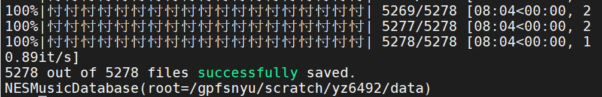

2020.8.31更新：初版的bug已经被修复，现移除相关描述。
也许是全网第一篇MusPy评测？
评价写在最前面：这是一个实用性极强的库，为每一个入行的人铺平了道路，使得人们能轻松地获取和清洗数据集。也许我该称呼它为symbolic music界的torchvision。
总之，非常推荐作为轮子使用，加入到自己的常备库里。
很久没写笔记了。最近一段时间很忙，预计这几天会陆陆续续将看过的文章的笔记更新上。处于更新列表的文章列于这篇笔记最后。
什么是MusPy
MusPy这个词来自于今年ISMIR里的论文：《MusPy: A Toolkit for Symbolic Music Generation》，作者是UCSD计算机音乐组的学生，其中一作Hao-Wen Dong曾是台湾Yi-Hsuan Yang组的学生，二作Ke Chen是上纽大Music X Lab的前学生。现两人均在UCSD读博。
文章中介绍到，MusPy是一个用于生成symbolic music的开源Python库，其功能包括：
- 数据集准备，可以对接PyTorch和TensorFlow。
- 数据的读取和预处理，支持了常见格式，有这和其他库合作的接口。支持数种常见表示。
- 模型的评估算法和工具，包括音频渲染、乐谱可视化、pianoroll可视化，以及指标计算。
实际上MusPy能够在下面的模块中给出帮助：
Introduction
在Introduction中，作者介绍了之前数据集存在的各种缺陷，以及工具包带来的一些意义。主要有：
- 数据集中的数据由于目的不一致，所以编码也没有统一。如MIDI为了播放设计，MusicXML/LilyPond为了记谱软件开发，MEI（XML格式的一个编码）是为了管理组织音乐文件，还有一些是为了提高可读性。这些格式不一致的确对我们带来了很多困扰。
- 音乐有层次结构，如何存储和表达层次结构也有着不同的设计，难以统一。当然还有一些专门为了生成模型设计的表示形式，如PianoRoll之类的。
- 人们开发了一些音乐生成的评估指标，用于客观评价。一个提供其实现的库可以帮助模型更好进行复现。
Related Works
Related Work模块中，作者探讨了相关工作。
- 在数据集搜集上，几乎没有相近工作。Magenta也许算一个，但它们与自家模型实现绑定得很紧。（我们组都是预先处理好数据集，在内部共享通用的）
- 在数据处理上，Music21是一个通用的处理工具。（但是众所周知它不是特别好用）
- jSymbolic提供了一个评估的手段，但是并没有为了生成模型评估优化过。（连我都没听过，也不知道作者到底哪里找到的，不容易。）
下面来看一下各个模块的功能。MusPy的功能总览将在最后给出。
MusPy支持的数据集
MusPy提供了一个MusPy类，作为一个通用的container。目前MusPy支持下面的数据集。
MusPy对象存储了音乐的下列数据：
实际上作者为了方便使用，使得MusPy成为了一种平衡各个数据优点的类。MusPy同时也提供了到music21，mido，pretty_midi的PyPianoroll的转换接口。具体的展示我会放在实战里。
MusPy允许导出的数据表示
上图展示了支持的四种表示。我们组自己常用第一种表示。
MusPy的评估工具
- 与音高有关的metrics：polyphony, polyphony rate, pitch-in-scale rate, scale consistency, pitch entropy and pitch class entropy.
- 与节奏有关的metrics：empty-beat rate, drum-inpattern rate, drum pattern consistency and groove consistency.
最后，放出MusPy的架构：

MusPy快速实战
我们使用下面的环境完成实战：Python 3.7，PyTorch，编程环境为Jupyter Notebook。
MusPy的GitHub地址在：https://github.com/salu133445/muspy
其文档在：https://salu133445.github.io/muspy/
MusPy提供了两个流程图。第一张流程图展示了数据集的获取和加载流程：
这张图展示了获取数据的过程。MusPy提供了两种内部处理流程。第一种允许直接使用数据集，第二种可以允许你预先保留数据集，进行保存，以避免每一次加载数据集都要进行额外的处理：
第二张图展示了MusPy的数据IO：
安装MusPy
1 | pip install muspy |
过程很顺利，注意到pypianoroll，mido，music21，pretty-midi是muspy的依赖库（因为muspy提供了接口支持）
任务：加载Nottingham数据集，并可视化数据
首先我们通过下载API获取数据：
1 | data_collection = muspy.NottinghamDatabase( |
具体各个数据集的加载方法可以参考https://salu133445.github.io/muspy/doc/datasets.html。
下载速度还行：
实际下载下来是这个样子的：
接下来转换格式：
1 | data_collection.convert(ignore_exceptions=True) |
对于EssenFolkSong和Nittingham数据集，ignore_exception参数是重要且必须的，否则会报错。NES数据集可以不加。

转换完之后在目录下生成_converted目录，里面就是json文件：
阅读Document，发现数据集加载函数中有一个use_converted参数，默认为None。
然后取一条数据出来：
1 | data_collection[0] |
当然可想而知得到的是json文件：
将其转化成PyTorch的数据集：
1 | dataset = data_collection.to_pytorch_dataset(representation="pianoroll") |
这个函数是一个高级封装函数，其中包含了两个重要参数：representation和splits。
representation参数接受‘event’, ‘note’, ‘pitch’, ‘pianoroll’，而splits参数接受float或者list，划分为2-3份。
我们先看看representation参数代表了什么：
参数为pianoroll时，数据被转换为了0-1矩阵，有128维：
最后试图visualize这个数据：
1 | data_collection[0].show_pianoroll() |
非常正常。
试图显示score，报错提示要安装music font。
1 | muspy.download_bravura_font() # run once |
报了个奇怪的错。总之score感觉没有那么好生成。成功之后会更新的。
两个issue已经上报：
https://github.com/salu133445/muspy/issues/2
https://github.com/salu133445/muspy/issues/3
任务：评测数据的基本指标
常见的函数都运转正常。
更新计划
论文笔记
[] Novice-AI Music Co-Creation via AI-Steering Tools for Deep Generative Models
[] Jukebox: A Generative Model for Music
[] Variational Template Machine for Data-to-Text Generation
[] PIANOTREE VAE: Structured Representation Learning for Polyphonic Music
[] Learning Interpretable Representation for Controllable Polyphonic Music Generation
[] POP909: A Pop-song Dataset for Music Arrangement Generation
软件工程
[] 前端工程，以及我为什么尝试做音乐智能的人机交互：一些思考
学术界和业界
[] 20世纪出现的一些仍然未解决的问题，阅读心得
[] 关于一套新的乐理体系
[] 欧洲各个实验室的研究方向介绍
[] CSMT